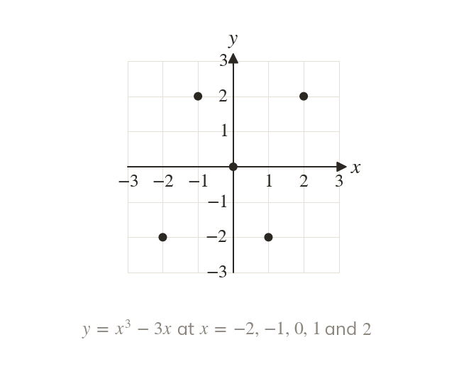
A table gives the points
Substituting each x into the equation gives its y. The same method plots any graph, not only lines.
Not every relationship is a straight line or a parabola. Cubic and reciprocal graphs model volumes and shared costs, and each has a shape you can spot from its equation.
Work down the page at your own pace. Write every answer in your book first, then click to check it.
Read each card, then follow the worked examples one step at a time.

Substituting each x into the equation gives its y. The same method plots any graph, not only lines.
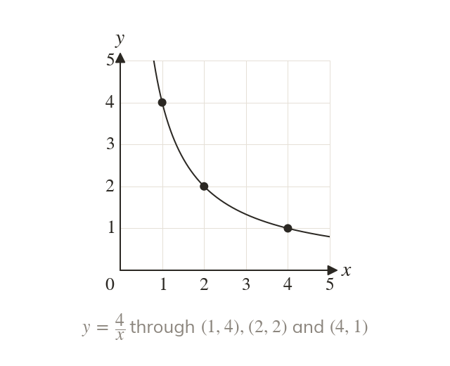
The points of a non-linear graph lie on a curve. They are joined smoothly, never with straight segments.
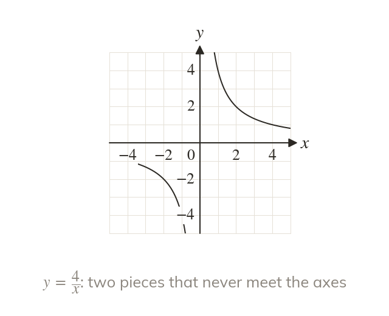
Dividing by is impossible, so has no point. The two pieces never touch the axes.
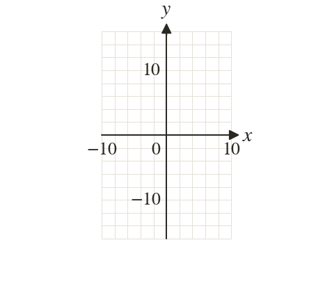
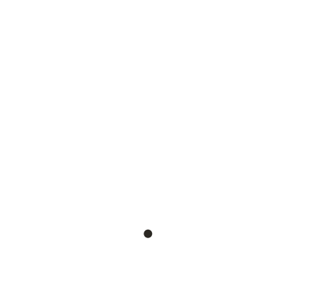
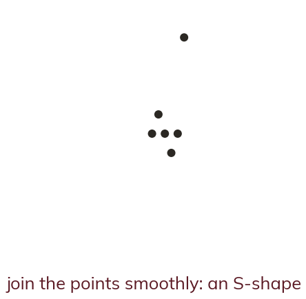
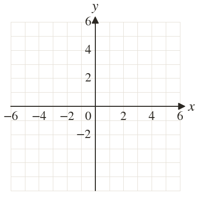
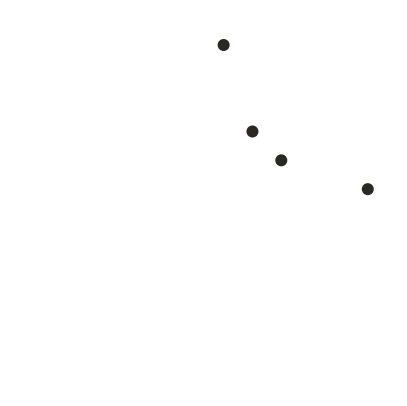
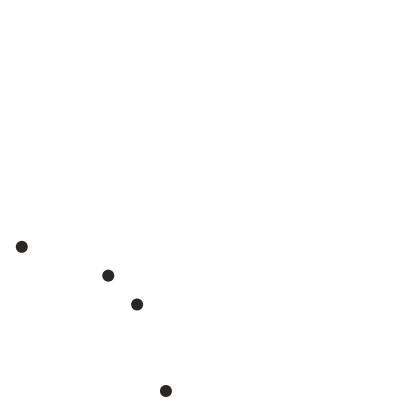
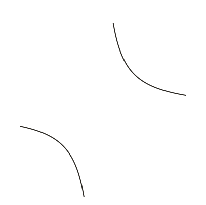
Pick an answer. If it's wrong, the feedback tells you which mistake it was.
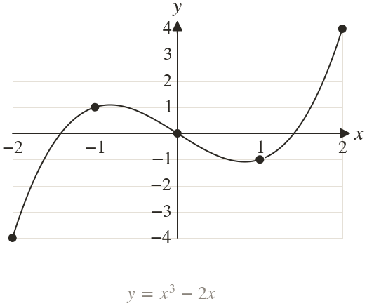
Printable worksheet — the questions with room to work.
Read each card, then follow the worked examples one step at a time.
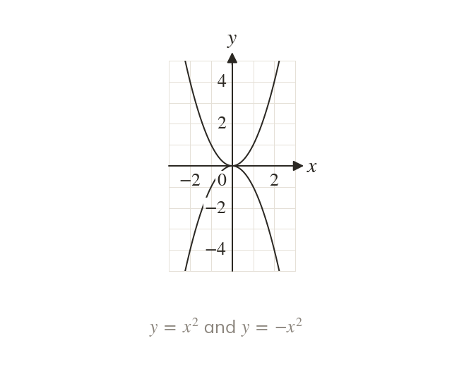
An as the highest power gives a parabola. A positive opens upwards, a negative one downwards.
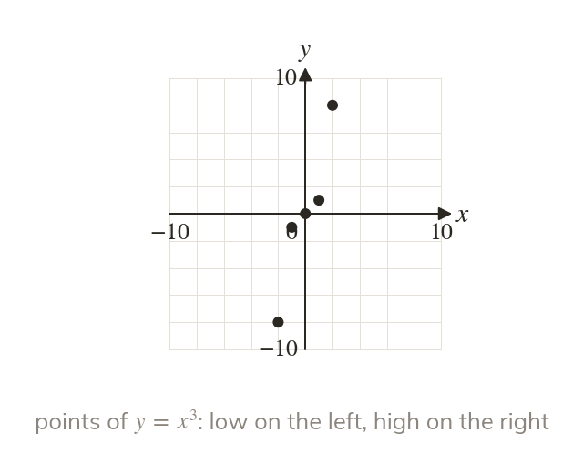
An as the highest power gives an S-shape. It rises at one end and falls at the other.
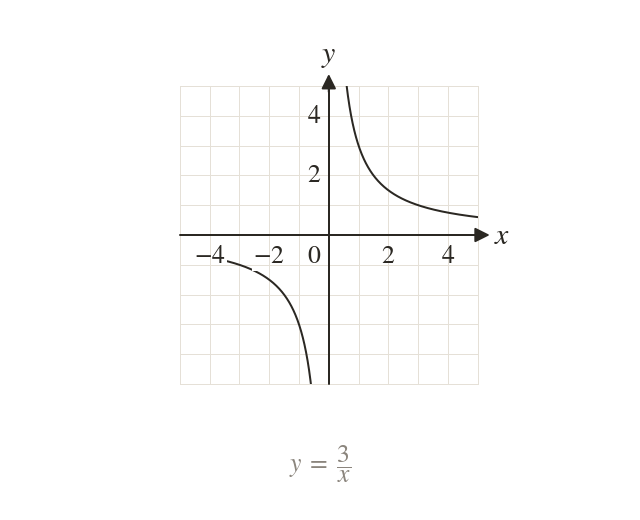
With x in the denominator, the graph is a reciprocal. Its two pieces never touch the axes.
Pick an answer. If it's wrong, the feedback tells you which mistake it was.
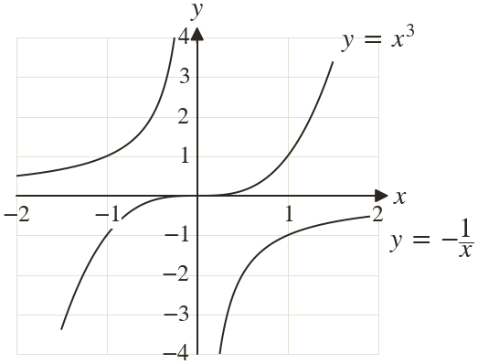
Finished? Next lesson: 10H.15.8 Solving Equations with Pre-Drawn Graphs.
For each skill, tap the one that is true for you today. Your Revise pages start with anything you mark Not yet.
Your ratings are saved on this device only.
Log in, then search for a code to practise that skill.
Videos, worksheets and more on each part of this lesson.